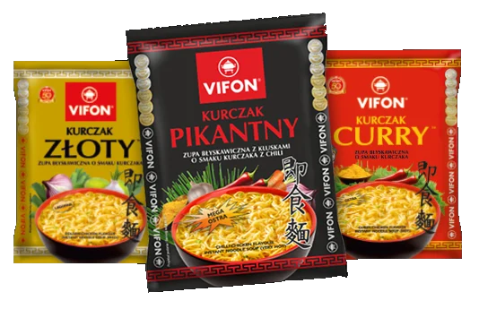

Najpopularniejsze zupki
Mmmmmmm ale pyszne

Zupki chińskie to popularne danie w Azji, które zyskuje na popularności również w innych częściach
świata. Są to przede
wszystkim proste dania jednogarnkowe, które przygotowuje się z różnych składników, takich jak mięso,
warzywa, makaron i
przyprawy. Istnieje wiele różnych rodzajów zupek chińskich, każda z nich charakteryzuje się
odmiennymi smakami i
konsystencją.
Jednym z najbardziej popularnych rodzajów zupek chińskich jest zupa wonton. Wontony to małe kluski z farszem mięsnym lub warzywnym, które zanurza się w bulionie z dodatkiem przypraw. Zupa ta ma intensywny smak i aromat, który pochodzi głównie z użytych przypraw. W Chinach zupa wonton jest powszechnie spożywana jako danie główne lub przekąska.
Innym popularnym rodzajem zupek chińskich jest zupa miso. Jest to zupa, która ma japońskie korzenie, ale została przyjęta w chińskiej kuchni. Składa się z bulionu, który jest gotowany z pasty miso, wodorostów i dodatkowych składników, takich jak tofu, grzyby shiitake i cebula. Zupa miso ma wyrazisty smak, a pasta miso dodaje do niej słoności i głębi smaku.
Zupa z krewetek to kolejny popularny rodzaj zup chińskich. Jest to delikatna zupa, która składa się z krewetek, warzyw, makaronu i przypraw. Zupa ta ma subtelny smak i aromat krewetek, który uzupełniony jest o smak ziół i przypraw.
Zupy chińskie często zawierają mięso, ale wiele z nich jest wegetariańskich lub wegańskich. Danie to może być bardzo zdrowe i niskokaloryczne, jeśli przygotowane jest z niskotłuszczowych składników i bez dodatku glutaminianu sodu (popularnie znanego jako MSG), który często znajduje się w gotowych mieszankach przyprawowych.
Jednym z najbardziej popularnych rodzajów zupek chińskich jest zupa wonton. Wontony to małe kluski z farszem mięsnym lub warzywnym, które zanurza się w bulionie z dodatkiem przypraw. Zupa ta ma intensywny smak i aromat, który pochodzi głównie z użytych przypraw. W Chinach zupa wonton jest powszechnie spożywana jako danie główne lub przekąska.
Innym popularnym rodzajem zupek chińskich jest zupa miso. Jest to zupa, która ma japońskie korzenie, ale została przyjęta w chińskiej kuchni. Składa się z bulionu, który jest gotowany z pasty miso, wodorostów i dodatkowych składników, takich jak tofu, grzyby shiitake i cebula. Zupa miso ma wyrazisty smak, a pasta miso dodaje do niej słoności i głębi smaku.
Zupa z krewetek to kolejny popularny rodzaj zup chińskich. Jest to delikatna zupa, która składa się z krewetek, warzyw, makaronu i przypraw. Zupa ta ma subtelny smak i aromat krewetek, który uzupełniony jest o smak ziół i przypraw.
Zupy chińskie często zawierają mięso, ale wiele z nich jest wegetariańskich lub wegańskich. Danie to może być bardzo zdrowe i niskokaloryczne, jeśli przygotowane jest z niskotłuszczowych składników i bez dodatku glutaminianu sodu (popularnie znanego jako MSG), który często znajduje się w gotowych mieszankach przyprawowych.